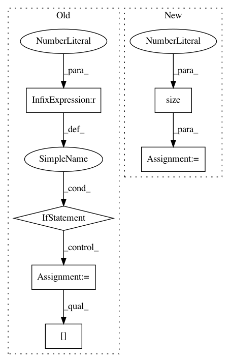

d8a075668b6e9cdf4c08f6c7285e5c7d2fbf5332,torch_geometric/graph/geometry.py,,edges_from_faces,#Any#,38
Before Change
def edges_from_faces(faces):
dim = faces.size(1)
if dim == 2:
edges = faces
elif dim == 3:
edges = torch.cat((faces[:, 0:2], faces[:, 0:3:2]))
else:
return ValueError()
// Append undirected edges.
edges = torch.cat((edges, edges.index_select(1, torch.LongTensor([1, 0]))))
// Sort the adjacencies row-wise.
edges = edges.t()
sorted, indices = torch.sort(edges[0], 0)
edges = torch.cat((sorted, edges[1][indices])).view(2, -1)
return edges
After Change
// Build directed adjacency matrix.
adj = torch.sparse.FloatTensor(edges.t(),
torch.ones(edges.size(0)),
torch.Size([n, n]))
// Convert to undirected adjacency matrix.
adj = adj + adj.t()
// Remove duplicate indices.
// NOTE: This doesn"t work if transpose(...) is removed.
adj = adj.transpose(0, 1).coalesce()
return adj._indices()
In pattern: SUPERPATTERN
Frequency: 3
Non-data size: 6
Instances
Project Name: rusty1s/pytorch_geometric
Commit Name: d8a075668b6e9cdf4c08f6c7285e5c7d2fbf5332
Time: 2017-10-17
Author: matthias.fey@tu-dortmund.de
File Name: torch_geometric/graph/geometry.py
Class Name:
Method Name: edges_from_faces
Project Name: rusty1s/pytorch_geometric
Commit Name: e60669c5aa467d5c11a508c01b37c4ed8e352fa6
Time: 2021-02-15
Author: matthias.fey@tu-dortmund.de
File Name: torch_geometric/nn/conv/supergat_conv.py
Class Name: SuperGATConv
Method Name: forward
Project Name: lanpa/tensorboardX
Commit Name: 4debe684b9332a0fee78065f9d506c7119568d06
Time: 2017-08-15
Author: 178844@studenti.unimore.it
File Name: tensorboard/embedding.py
Class Name:
Method Name: make_sprite